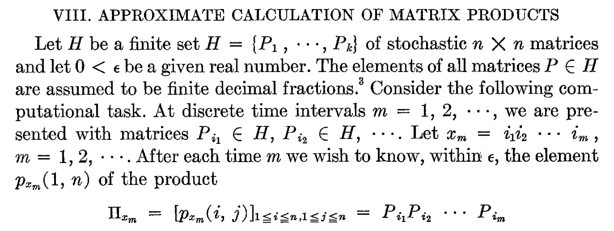

Online Space Complexity




Probabilistic Automata

Deterministic Online Space Complexity
For a fixed $L \subseteq A^*$,
what is the size of the smallest data structure maintaining the answer to the Boolean query "is the word in $L$?"
Karp (67): consider infinite automata, the size is $$n \mapsto \textrm{ number of states reachable by reading at most } n \textrm{ letters}$$
Myhill-Nerode point of view
The size of the minimal deterministic automaton for $L$ is the number of left quotients: $$u^{-1} L = \{v \mid uv \in L\}$$
Theorem (Hartmanis and Shank 1969): Prime does not have subexponential deterministic OSC
Theorem: there exists a probabilistic automaton which does not have subexponential deterministic OSC

After reading $u 1 \sharp$ and $u' 1 \sharp$, the two states must be different:
Indeed, there exists $v$ such that $$\begin{cases} \mathrm{bin}(u 1) \cdot \mathrm{bin}(v) < \frac{1}{2} \\ \mathrm{bin}(u' 1) \cdot \mathrm{bin}(v) > \frac{1}{2} \end{cases}$$
Indeed, there exists $v$ such that $$\begin{cases} \mathrm{bin}(u 1) \cdot \mathrm{bin}(v) < \frac{1}{2} \\ \mathrm{bin}(u' 1) \cdot \mathrm{bin}(v) > \frac{1}{2} \end{cases}$$
Alternating Online Space Complexity
$$\delta : Q \times A \to \mathbb{B}^+(Q)$$
The size is $$f : n \mapsto \textrm{ number of states reachable by reading at most } n \textrm{ letters}$$